Navigation & Accessibility
Directions are often unclear and use terminology that is unfamiliar to users who are not from the city.

Problem
NYC tourists struggle with unreliable transit, confusing station terminology, and apps that don't account for delays or offer trustworthy local recommendations.
Solo
UX/UI Designer
Jun – Aug 2025
Transit Pal is a tourist-focused NYC transit app featuring Safe Arrival mode, curated local recommendations, and an integrated AI chatbot to help visitors navigate the city stress-free.
Design a tourist-friendly transit app that solves navigation confusion, accounts for delays, simplifies payment, and surfaces local recommendations — all in one place.
UX Research • User Interviews • Competitive Analysis • Wireframing • Prototyping • High-Fidelity Mockups
01 Research
I interviewed four non-native New Yorkers in their 20s who had previously visited NYC, gathering their tourist pain points and organizing them into four key categories.
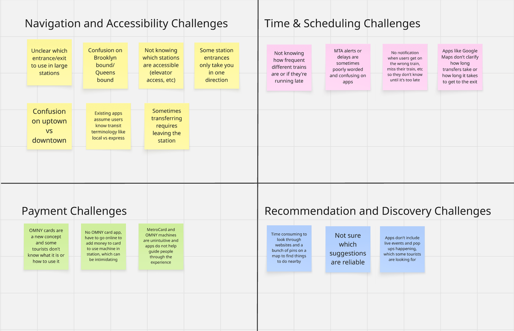
"My stop was skipped so many times because I accidentally got on the express train, not knowing it was different from the local."
"I'm always confused by terms like 'uptown' vs. 'downtown' or 'Queens-bound' vs. 'Brooklyn-bound.' I'm not familiar with the city's geography."
Before designing my app, I conducted a SWOT analysis of popular tourist transit apps to discover effective features as well as where they fell short for tourists' needs.
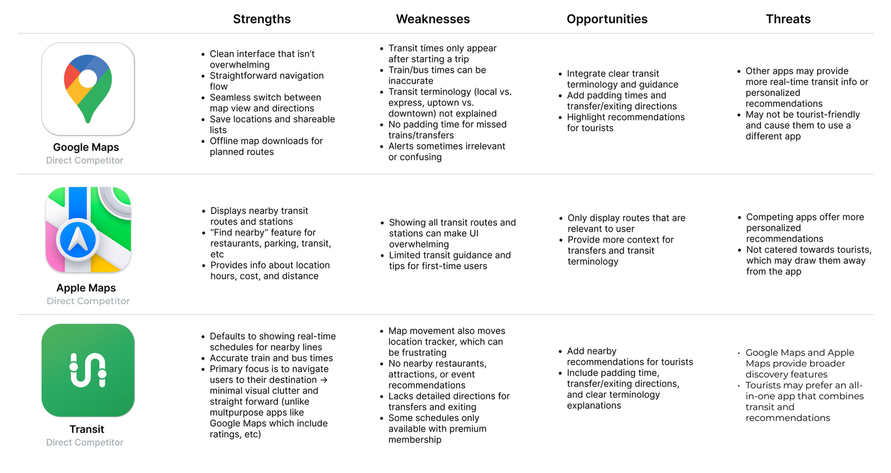
Competitive analysis revealed that existing transit apps are not tailored to the needs of tourists. They often fail to explain city-specific terminology, account for delays, or provide recommendations relevant to users.
02 Define
Through interviews and competitive analysis, I was able to identify and group the issues into four key pain points:
Directions are often unclear and use terminology that is unfamiliar to users who are not from the city.
Delays and transfer times are often unaccounted for on transit apps, causing users to arrive late.
Payment methods and reload options for MetroCards and OMNY are unclear.
Tourists lack curated discovery options in current navigation apps.
With these ideas, I kept a primary objective in mind:
03 Ideation
04 Design
I started with a map-first home screen for quick transit access — but after reconsidering tourist needs, I redesigned it to combine recommendations with navigation, giving users flexibility based on their goal.
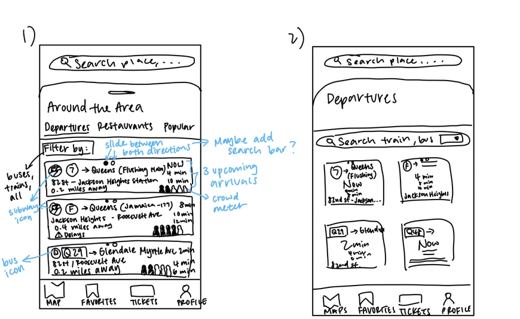
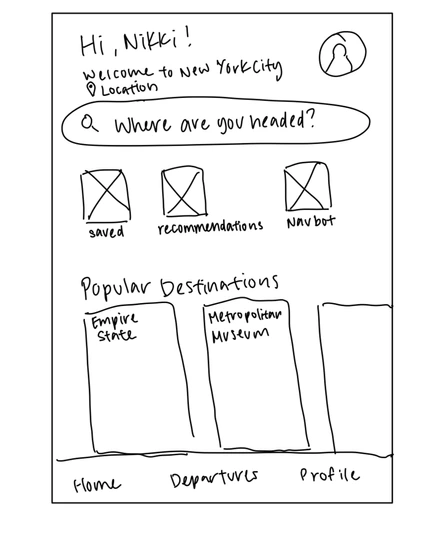
Pain Points Addressed: Navigation & Accessibility · Recommendations & Discovery
I integrated an AI chatbot to support commuters encountering unpredictable issues like delays, missed trains, or construction, where quick help isn't always available. NavBot lets users ask real-time, specific questions and get instant, tailored responses.
When designing NavBot's interface, I wanted to make it feel like a messaging app, as if the user were texting a friend, and included suggested prompts to guide user interaction. I experimented with different layouts to optimize usability:
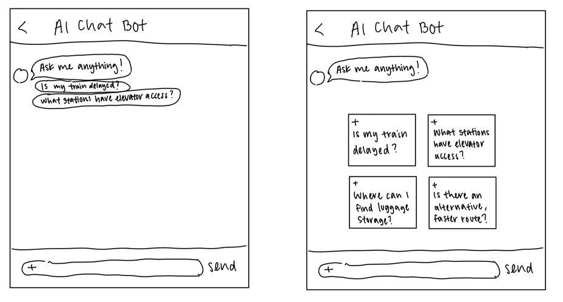
Pain Points Addressed: Navigation & Accessibility · Recommendations & Discovery
When designing the directions page, I wanted to include a Safe Arrival feature that added buffer time to the commute that accounted for delays, walking, and missed transfers. Including pop-up notifications about city-specific terminology, delays, construction, how to pay, etc. directly into the commute would allow users to better understand their journey as they are traveling to their destination.
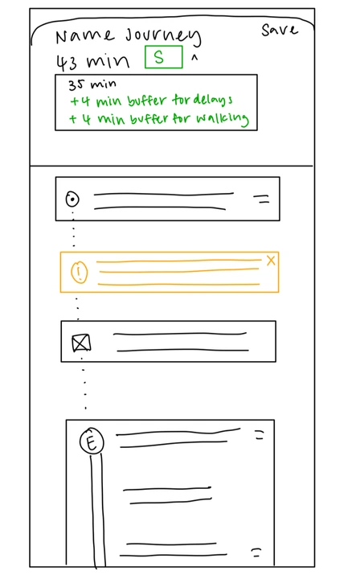
I also experimented with different layouts for displaying multiple commutes:
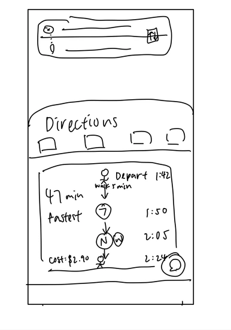
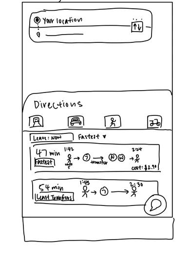
Pain Points Addressed: Navigation & Accessibility · Timing & Scheduling
Tourists visit New York City for many reasons — to sightsee, try new restaurants, or explore fun activities. To accommodate different types of users, I designed a recommendations page organized into six main categories, ranging from local favorites to major attractions. This structure helps users quickly find what they're looking for without endlessly scrolling through options.
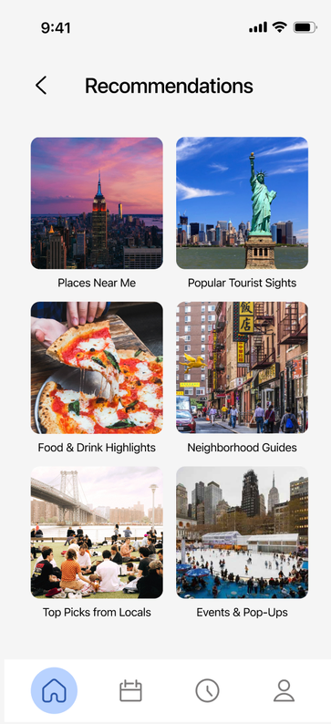
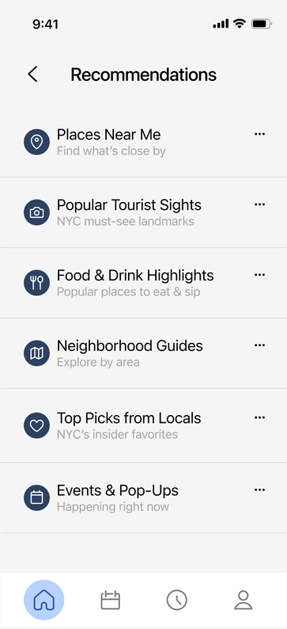
Pain Points Addressed: Recommendations & Discovery
Currently, there is no app that allows users to add money to their OMNY cards. Commuters have to visit the OMNY website or use subway kiosks. To streamline the transit payment process, I designed a feature that lets users link their OMNY card directly to their profile. This allows them to easily add funds and track their commuting expenses all in one place.
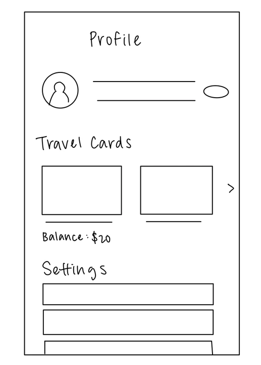
Pain Points Addressed: Payment
My goal was to create a navigation experience that feels trustworthy, confident, and calm. I tied the design back to the MTA by using a blue reminiscent of its logo.
Heading 1 Body Medium
Heading 2 Body Regular
Heading 3 Body Light
05 Solution
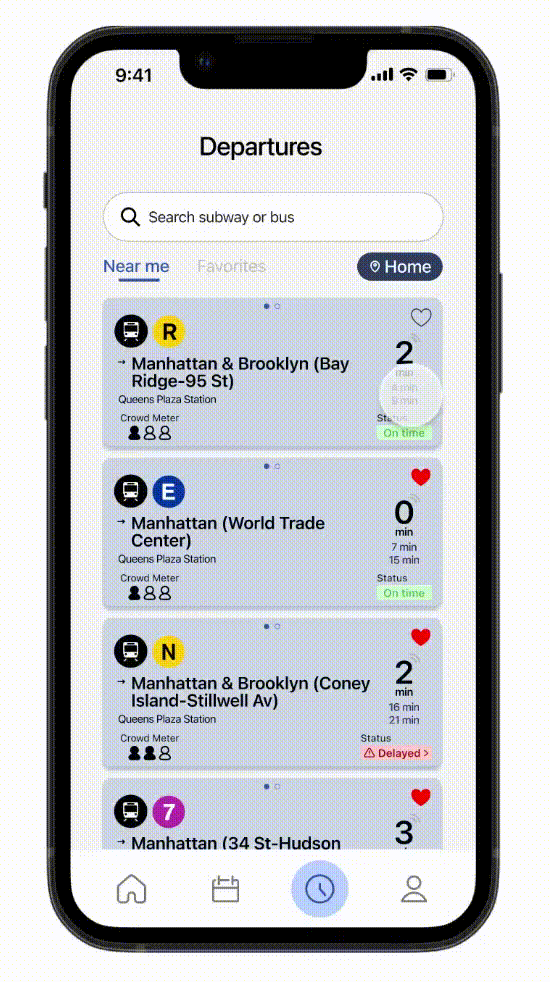
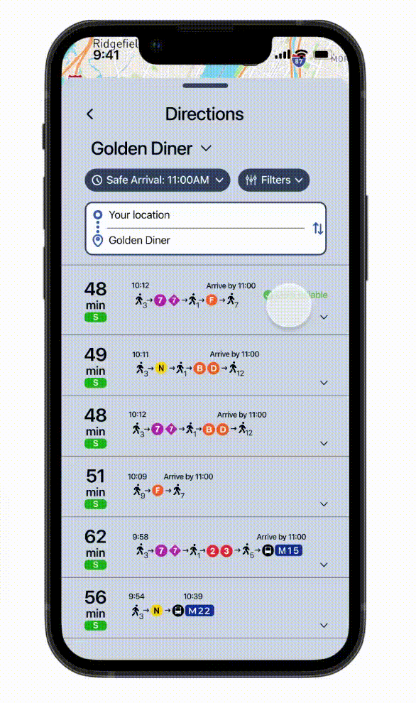
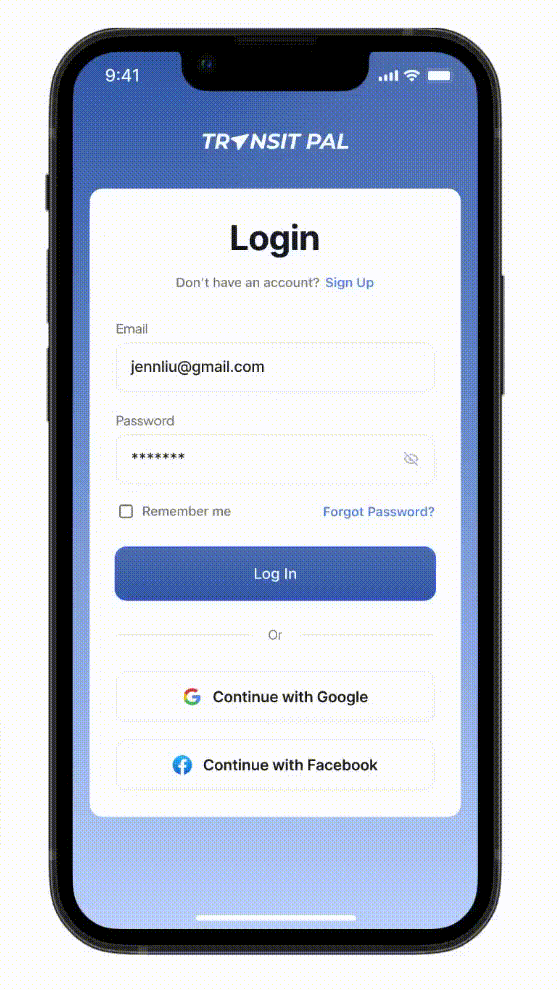
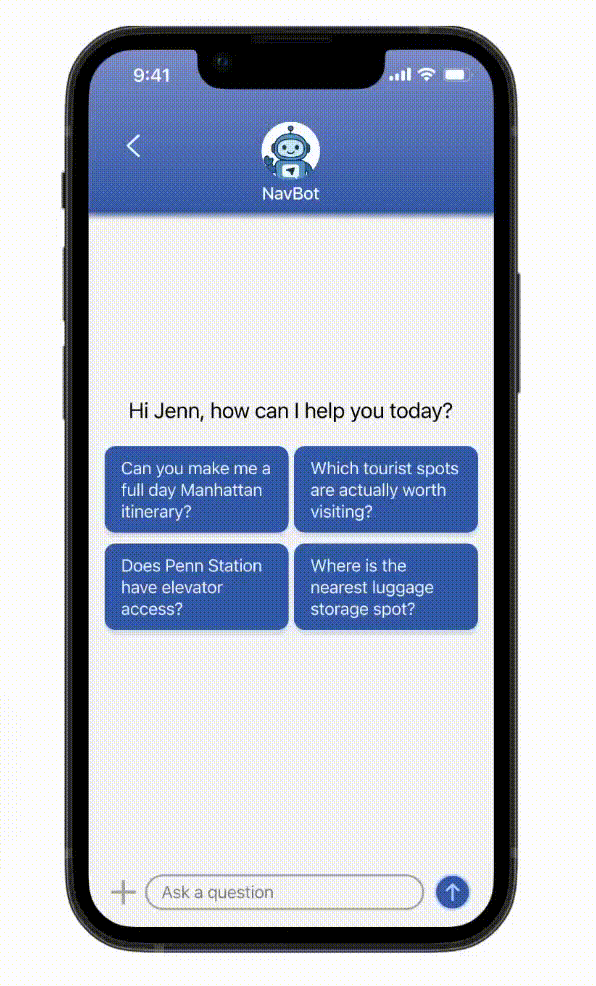

06 Impact
While I developed Transit Pal independently, if I were approaching it from the perspective of a design team, to determine if the app met its intended goals, I would track metrics such as:
07 Reflection
Transit Pal was my first project that I designed entirely from scratch. I went through a lot of trial and error to create a cohesive and intuitive design. Sometimes, I would take a prototype all the way to completion, only to realize a page needed a full redesign. I really enjoyed the freedom of building my own app, exploring research and prototyping, and sharing ideas with my peers.
There are still many ideas I would like to expand upon with Transit Pal. I wanted to make the app more personal, including an onboarding screen to record users' trip goals and interests to tailor their recommendations. I also hope to add a system that adjusts schedules automatically, notifying users if they haven't left a location or if later events require time shifts.
back to top ↑